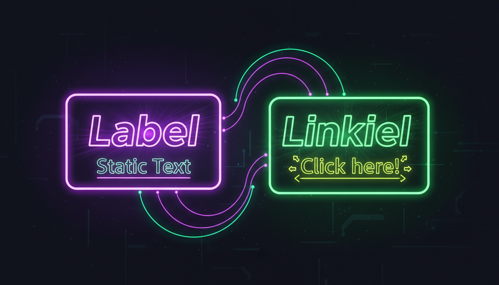

Відображення тексту, гіперпосилання, форматування тексту

// Мітка
Label^ lbl = gcnew Label();
lbl->Text = "Введіть ім'я:";
lbl->Location = Point(20, 53);
lbl->AutoSize = true;
lbl->ForeColor = Color::Cyan;
lbl->Font = gcnew Font("Segoe UI", 10);
// LinkLabel
LinkLabel^ link = gcnew LinkLabel();
link->Text = "Перейти на сайт";
link->Location = Point(20, 100);
link->LinkClicked += gcnew LinkLabelLinkClickedEventHandler(
this, &MyForm::OnLinkClicked);
void OnLinkClicked(Object^ sender, LinkLabelLinkClickedEventArgs^ e) {
System::Diagnostics::Process::Start("https://example.com");
}